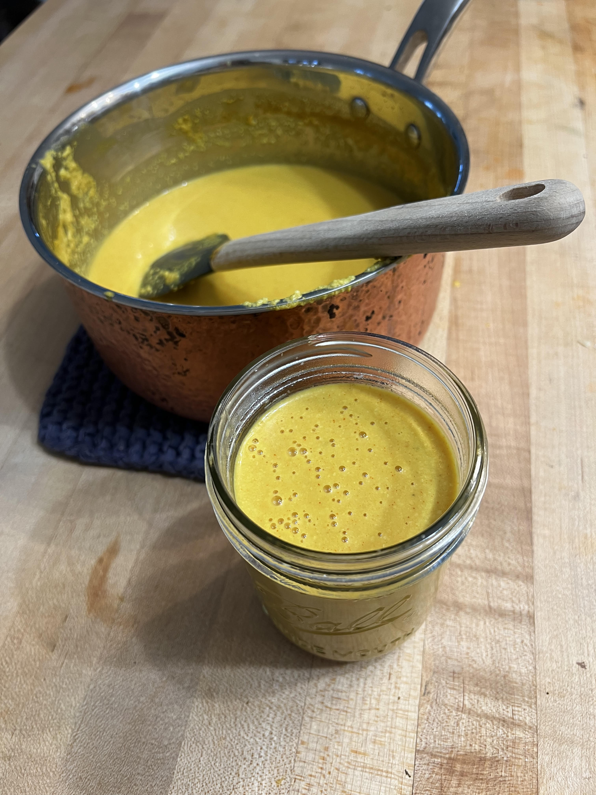

Nacho Cheese

This creamy nacho cheese style sauce makes a great cheese dip and also goes great on dishes
enchiladas.
Ingredients
- 2 cups raw cashews
- 4 cups of water, separated
- 1/2 cup nutritional yeast
- 3 Tbsp lemon juice
- 1 tsp onion powder
- 1 tsp garlic powder
- 2 tsp salt
- 1/2 tsp paprika
- 1/2 tsp cayenne
- 1/2 tsp turmeric, for color
Directions
- Boil enough water to cover the cashews and soak them for at least 10 minues.
- Add the soaked cashews, lemon juice, 3 cups of water, nutritional yeast, smoked papriki,
garlic powder, onion powder, cayenne, salt, and turmeric to a blender. Blend until smooth.
- In a medium saucepan, add the blended cheese sauce. Stir constantly over medium heat until
it begins to bubble and thicken, about 5 minutes. Add water if you prefer a thinner cheese
sauce. Add more salt to taste.